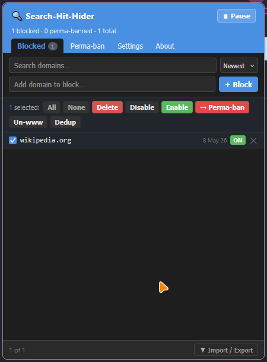
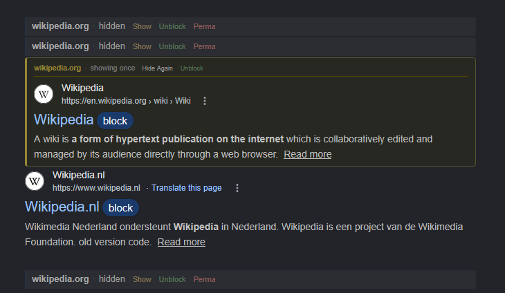

Take Control of Your Search Results
Hide unwanted domains with one click. Auto-load more results as you scroll. No accounts, no servers, no tracking — everything lives in your browser.
Everything You Need for Cleaner Searches
Powerful features designed to give you complete control over your search experience.
One-Click Blocking
Click the block button next to any result to hide that domain instantly. Choose exact subdomain, root domain, or let the extension decide.
Infinite Scroll
Scroll to the bottom and more results load automatically. No more clicking through pagination. Configurable threshold and max pages.
100% Private
Zero external requests, zero data collection, zero telemetry. Block lists stored locally. Preferences synced via Firefox Sync only if you enable it.
Two Blocking Modes
Regular block shows a placeholder you can undo. Perma-ban removes results entirely with no trace. Switch between modes anytime.
Import & Export
Full JSON backup, plain domain lists, and userscript format compatibility. Move your block lists between browsers effortlessly.
Dark Mode Support
System, light, or dark theme for the popup. Page-injected styles adapt to each search engine's background color in real time.
Bulk Management
Search, sort, and bulk-select entries. Delete, enable/disable, convert between modes, deduplicate, and strip www. prefixes in one click.
Zero Flicker
Preload script hides blocked results before the first paint. Three-layer CSS protection survives page JavaScript interference.
Three Steps to Cleaner Results
Get started in seconds. No setup, no accounts, no configuration required.
Install the Extension
Get it from Firefox Add-ons or install manually from GitHub. Works with Firefox 112+.
Search as Usual
A small "block" button appears next to each result on supported search engines. Click to hide any domain.
Scroll & Enjoy
More results load automatically as you scroll. Blocked domains stay hidden across all future searches.
Works With Your Favorite Engines
Supports all major search engines with 40+ Google regional domains covered.
DuckDuckGo
Web + React SPABing
Web resultsYandex
9 regional domainsBaidu
Web resultsBrave Search
+ Tor onion supportSee It In Action
A clean, intuitive interface that stays out of your way.


Your Privacy Matters
No accounts. No servers. No tracking. Block lists stored locally in your browser. Zero external network requests. No analytics, no crash reporting, no telemetry. Fully open source — auditable by anyone.
Frequently Asked Questions
Search Hit Hider lets you hide unwanted domains from search results with a single click. It also adds infinite scroll to automatically load more results as you scroll down. Supports Google, DuckDuckGo, Bing, Yandex, Baidu, and Brave Search.
Absolutely. The extension makes zero external network requests. Block lists are stored locally in your browser. Preferences can optionally sync via Firefox Sync if you have it enabled. There is no analytics, no crash reporting, and no telemetry of any kind.
Regular Block hides the result but shows a quiet placeholder that lets you show or unblock it. Perma-ban removes the result entirely with no trace — it's as if the result never existed.
Yes! The extension supports JSON export/import for full round-trip backup, plain domain lists (one per line), and the original Google Hit Hider userscript format for compatibility with Greasy Fork.
Infinite scroll works on Google, Bing, Yandex, Brave Search (fetch-based), and DuckDuckGo (native trigger mode). Each engine uses the optimal approach for its architecture. You can configure the scroll threshold, max pages, and scroll persistence in settings.
After blocking a domain, a toast notification appears for 4 seconds with an "Undo" button. You can also click "Show" on the placeholder to temporarily reveal a hidden result, or "Unblock" to permanently remove it from your block list.
Yes! The full source code is available on GitHub under the MIT license. No minified blobs, no remote scripts — everything is auditable. Bug reports and pull requests are welcome.
Ready for Cleaner Searches?
Install Search Hit Hider and Infinite Scroll today. Free, open source, and privacy-respecting.